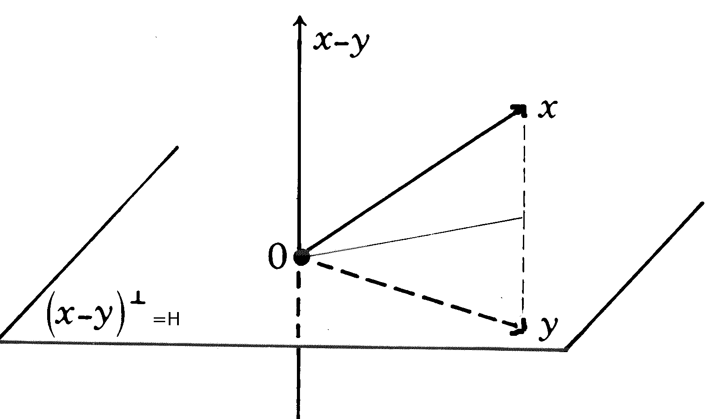

| Choisissez votre langue ! | Choose your language ! |
Méthode de Householder
Householder method
Réflexions
E désigne un espace euclidien de dimension finie.Nous rappelons ce qu'est une symétrie orthogonale par rapport à un sous espace F.
L'espace E est somme directe de F et F⊥ tout vecteur x s'écrit donc de façon unique x=y+z avec y ∈ F et z ∈ F⊥.
L'application x → y-z possède les propriétés suivantes:
C'est une , s*=s-1.
Elle est involutive s os=Id
Donc en définitive:
s=s*=s-1
Reflexions
E denotes a finite dimensional Euclidean space.We recall what is an orthogonal symmetry with respect to a subspace F.
The space E is direct sum of F and F⊥ any vector x is therefore written in a unique way x=y+z with y ∈ F and z ∈ F⊥.
The map x → y-z has the following properties:
It's a , s*=s-1.
It is involutive s os=Id
So ultimately:
s=s*=s-1
définition 1
Dans le cas particulier où F est un nous appellerons une telle symétrie une
'réflexion'
.
definition 1
In the special case where F is a we will call such a symmetry a
'reflection'
.
Le premier résultat important concernant les réflexions est le suivant:
The first important result concerning reflections is the following:
propriété 1
x et y étant deux vecteurs de même non nulle. Il existe une et une seule réflexion transformant x en y.
property 1
x and y being two vectors with the same not zero. There is one and only one reflection transforming x into y.
Il est clair que la réflexion cherchée est exactement la réflexion par rapport à l'hyperplan H au vecteur x-y.
It is clear that the sought reflection is exactly the reflection with respect to the hyperplane H to the vector x-y.

Produits tensoriels
Tensor products
notation 1
Soit W un vecteur colonne de ℝn , alors le produit matriciel W tW est une matrice carrée d'ordre n que nous noterons W⊗W .
notation 1
Let W be a column vector of ℝn , then the matrix product WWT is a square matrix of order n that we will denote W⊗W .
propriété 2
W⊗W est clairement symétrique
property 2
W⊗W is clearly symmetric
Le coefficient d'indice i,j est wiwj.
The coefficient with index i,j is indeed wiwj.
propriété 3
Considérons le cas particulier où W est de norme euclidienne 1 (||W||=1) alors dans ce cas : (W⊗W)(W⊗W)=W⊗W.
property 3
Consider the particular case where W has Euclidean norm 1 (||W||=1) then in this case: (W⊗W)(W⊗W)=W⊗W.
Il suffit pour le voir d'utiliser la définition du produit tensoriel et le fait que W est de norme 1.
It is enough to see it to use the definition of the tensor product and the fact that W has norm 1.
propriété 4
Toujours dans le cas où ||W||=1. L'application S de matrice: M(S)=I-2W⊗W vérifie:
S=S-1=S*
S(W)=-W
property 4
Always in the case where ||W||=1. The application S with matrix : M(S)=I-2W⊗W verifies:
S=S-1=S*
S(W)=-W
Pour la première partie, il suffit pour le voir de calculer le produit S2 et d'utiliser la propriété précédente.
Pour la seconde partie l'égalité résulte de la définition de W⊗W et du fait que W est de norme 1.
En conclusion:
Pour la seconde partie l'égalité résulte de la définition de W⊗W et du fait que W est de norme 1.
En conclusion:
For the first part, it suffices to see it to calculate the product S2 and use the previous property.
For the second part the equality results from the definition of W⊗W and from the fact that W has norm 1.
In conclusion:
For the second part the equality results from the definition of W⊗W and from the fact that W has norm 1.
In conclusion:
propriété 5
S est la symétrie orthogonale par rapport à l'hyperplan H=W⊥.
property 5
S is the orthogonal symmetry with respect to the hyperplane H=W⊥.
Nous pouvons maintenant combiner cela avec la première partie:
We can now combine this with the first part:
propriété 6
Si x et y sont deux vecteurs de même norme non nulle, la réflexion transformant x en y a pour matrice I-2W⊗W où W est le vecteur (x-y)/||x-y||.
property 6
If x and y are two vectors with the same nonzero norm, the reflection transforming x into y has for matrix I-2W⊗W where W is the vector (x-y)/||x-y||.
Factorisation de Householder
Nous avons maintenant tous les outils nécessaires pour donner l'algorithme de décomposition QR de Householder.Soit A une matrice carrée régulière d'ordre n.
On désigne par U1,...,Un les vecteurs colonnes de la matrice A.
(e1,...,en) désigne la base canonique de ℝn. Nous affirmons que:
Householder factorization
We now have all the tools needed to give Householder's QR decomposition algorithm.Let A be a regular square matrix of order n.
We denote by U1,...,Un the column vectors of the matrix A.
(e1,...,en) denotes the canonical basis of ℝn. We affirm that:
propriété 7
Il existe une réflexion H1 tel que le vecteur H1A(e1)=H1U1 ait toutes ses coordonnées nulles sauf la première.
property 7
There is a reflection H1 such that the vector H1A(e1)=H1U1 has all its coordinates zero except the first one.
Il suffit d'appliquer ce qui précède avec x=U1 et y=kαe1 où α=||U1|| et k = +/- 1.
En pratique nous prendrons toujours k du signe opposé de la première coordonnée de U1. Il existe donc une réflexion H1 telle que: H1A soit de la forme:
En pratique nous prendrons toujours k du signe opposé de la première coordonnée de U1. Il existe donc une réflexion H1 telle que: H1A soit de la forme:
Just apply the above with x=U1 and y=kαe1 where α=||U1|| and k = +/- 1.
In practice we will always take k from the opposite sign of the first coordinate of U1. There is therefore a reflection H1 such as: H1A is of the form:
In practice we will always take k from the opposite sign of the first coordinate of U1. There is therefore a reflection H1 such as: H1A is of the form:
\( A=\begin{pmatrix} x& . & .& . & . \\ 0& & & & \\ 0& & A_{1} & & \\ 0& & & & \\ 0& & & & \\ \end{pmatrix} \)
Appliquons maintenant l'hypothèse de récurrence à la matrice A1 d'ordre n-1. Nous avons une factorisation A1=Q1R1 avec Q1 orthogonale.
Ce que nous pouvons encore écrire tQ1A1=R1.
De cette écriture nous pouvons déduire: tQ1'A1'=R1' où:
∀ M, M' est la matrice obtenue en bordant M par la ligne (1,0, .. ,0) au dessus et par la colonne t (1,0, ... ,0) à gauche. On peut alors écrire:
H1A=A1'+ M où M a toutes ses lignes nulles sauf la première.
En multipliant par tQ1'
tQ1'H1 A=R1'+ tQ1'M
Vu la forme de tQ1' on peut affirmer que tQ1'M comporte des zéros partout sauf sur la première ligne.
De sorte que:
R1'+ tQ1'M est triangulaire
et,
tQ1'H1 est orthogonale comme produit de deux matrices orthogonales.
Le théorème est donc démontré par récurrence sur le rang de A.
Ce que nous pouvons encore écrire tQ1A1=R1.
De cette écriture nous pouvons déduire: tQ1'A1'=R1' où:
∀ M, M' est la matrice obtenue en bordant M par la ligne (1,0, .. ,0) au dessus et par la colonne t (1,0, ... ,0) à gauche. On peut alors écrire:
H1A=A1'+ M où M a toutes ses lignes nulles sauf la première.
En multipliant par tQ1'
tQ1'H1 A=R1'+ tQ1'M
Vu la forme de tQ1' on peut affirmer que tQ1'M comporte des zéros partout sauf sur la première ligne.
De sorte que:
R1'+ tQ1'M est triangulaire
et,
tQ1'H1 est orthogonale comme produit de deux matrices orthogonales.
Le théorème est donc démontré par récurrence sur le rang de A.
Le coin de Python
Voici une implémentation de l'algorithme de factorisation QR par la méthode de Householder. Let us now apply the induction hypothesis to the matrix A1 of order n-1. We have a factorization A1=Q1R1 with Q1 orthogonal.
What we can still write Q1TA1=R1.
From this writing we can deduce:Q1'TA1'=R1' where:
∀ M, M' is the matrix obtained by bounding M by the row (1,0, .. ,0) above and by the column (1,0, ... ,0)T to the left. We can then write:
H1A=A1'+ M where M has all its rows zero except the first.
By multiplying by Q1'T
Q1'TH1 A=R1'+Q1'TM
Given the shape of Q1'T we can say that Q1' tM has zeros everywhere except on the first line.
So that:
R1'+Q1'TM is triangular
and,
Q1'TH1 is orthogonal as the product of two orthogonal matrices.
The theorem is thus proved by induction on the rank of A.
What we can still write Q1TA1=R1.
From this writing we can deduce:Q1'TA1'=R1' where:
∀ M, M' is the matrix obtained by bounding M by the row (1,0, .. ,0) above and by the column (1,0, ... ,0)T to the left. We can then write:
H1A=A1'+ M where M has all its rows zero except the first.
By multiplying by Q1'T
Q1'TH1 A=R1'+Q1'TM
Given the shape of Q1'T we can say that Q1' tM has zeros everywhere except on the first line.
So that:
R1'+Q1'TM is triangular
and,
Q1'TH1 is orthogonal as the product of two orthogonal matrices.
The theorem is thus proved by induction on the rank of A.
Python's corner
Here is an implementation of the QR factorization algorithm by Householder's method.
Le coin de Julia
Même chose avec Julia 1.6
Julia's corner
Same with Julia 1.6
|
Création Gilles Dubois - licence CC-BY-SA
Created by Gilles Dubois - licence CC-BY-SA
|
Septembre 2023
September 2023
|
Version mobile Jquery
Mobile Jquery version
|
|